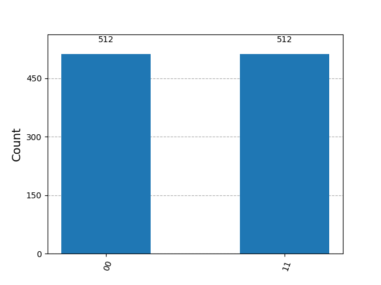

Qiskit + IBM: Simulation and Calculation
Table of Contents
1. Overview
[Go back to Table of Contents]
- This page focuses on quantum computing simulations or job submissions on IBM
hardware
- There are several ways to simulate quantum computations
- Statevector simulations
- Using SamplerV2 or EstimatorV2
- There are several ways to simulate quantum computations
The general work-flow is to:
- Create a quantum circuit
- Decide whether to simulate it or run it on quantum hardware
- Typically, we simulate it first
- We want our simulation syntax to match as closely as possible to the syntax of job submission.
2. The quantum_info Module
[Go back to Table of Contents]
2.1. Overview
- The
quantum_infomodule is built intoqiskitand provides some basic simulations- This is useful when we want to understand the quantum properties of the output of a circuit
- It provides:
Statevectorsimulations
2.2. Make a Quantum Circuit
In a Jupyter notebook we could make a cell like this:
from qiskit import QuantumCircuit import qiskit.quantum_info as qi qc = QuantumCircuit(2) qc.x(0) # add a NOT gate to qubit 0 qc.h([0,1]) # add a H to both qubits # In a Jupyter notebook, you can uncomment "qc.draw()" # to see your circuit # qc.draw()
In Jupyter Lab, your result may be displayed automatically and look like Figure 1.

Figure 1: A simple qiskit quantum circuit.
2.3. Get an Output Statevector() Object
We can then obtain the circuit output in Statevector form:
ψ = qi.Statevector( qc ) print( ψ ) # In a Jupyter Lab notebook, you can see the result using this: # ψ.draw()
Statevector([ 0.5+0.j, -0.5+0.j, 0.5+0.j, -0.5+0.j],
dims=(2, 2))
In a Jupyter notebook, you can comment print( ψ ) and uncomment ψ.draw()
to see a result that's nicer than the one shown here. It may look like this:
2.4. Measurement Probabilities
Once we have a Statevector object, we can use it to see the probabilities of
measurement, which are the modulii squared of the coefficients:
print( psi.probabilities() )
[0.25 0.25 0.25 0.25]
In this case, there are four outcomes, each with a 1/4 probability of occurring.
2.5. Simulated Experiments
Generally, a quantum computing experiment requires establishing a circuit and performing measurements many times. Each repetition is a shot or a trial, and a collection of shots is an ensemble of measurements.
2.5.1. Measurement Outcomes for Each Shot
We can use ψ to simulate circuit measurements using the sample_memory()
method. We specify a number of shots (trials), and we get a histogram of
samples, that is, the number of times each outcome was measured.
samples = ψ.sample_memory( shots = 10 ) # This lists the outcomes measured for each of the 10 shots print(samples)
['10' '11' '00' '01' '10' '00' '11' '00' '11' '11']
2.5.2. Cumulative Results over an Ensemble
- If we don't care about each shot, but rather, we care more about aggregate
data, we can use
sample_counts()- For a given number of shots, it simulates the set of measurements, returning a frequency (number of occurrences) for each outcome measured.
counts = ψ.sample_counts( shots = 1024 ) print(counts)
{np.str_('00'): np.int64(255), np.str_('01'): np.int64(274), np.str_('10'): np.int64(242), np.str_('11'): np.int64(253)}
The counts can be visualized in a histogram. In a Jupyter notebook, use the
following, but uncomment the plot_histogram() command:
from qiskit.visualization import plot_histogram # Uncomment in Jupyter to see histogram # plot_histogram( counts )

Figure 2: This is a histogram of simulated measurents based on a Statevector output from a quantum circuit.
State vector simulations get us a state vector, and we are using that state vector object to simulate measurements.
2.5.3. Expectation Values
State vector simulations also allow us to get expectation values, as defined in Equation \eqref{org564ac59}
\begin{equation} \label{org564ac59} \left\langle \mathbf{O} \right\rangle = \left\langle \psi \left| \mathbf{O} \right| \psi \right\rangle \end{equation}First, we form an operator:
O = qi.SparsePauliOp(['ZZ', 'XX', 'II'], [0.2, -0.3, 0.4]) # Uncomment this in Jupyter # display(O.to_operator()) # Comment/omit this in Jupyter print(O.to_operator())
Operator([[ 0.6+0.j, 0. +0.j, 0. +0.j, -0.3+0.j],
[ 0. +0.j, 0.2+0.j, -0.3+0.j, 0. +0.j],
[ 0. +0.j, -0.3+0.j, 0.2+0.j, 0. +0.j],
[-0.3+0.j, 0. +0.j, 0. +0.j, 0.6+0.j]],
input_dims=(2, 2), output_dims=(2, 2))
Next, we supply \(\mathbf{O}\) to the ψ (a Statevector object) in its
expectation_value() method:
O_exp = ψ.expectation_value( O ) print(O_exp)
(0.6999999999999997+0j)
2.5.4. Bloch Vectors
We can ask Python to draw the Bloch vector for ψ:
# Use this in Jupyter: # ψ.draw('bloch') # Comment this out or omit the following in Jupyter p fname = os.join('html', 'img', 'basicBlochVect.png') ψ.draw('bloch', filename=fname) import matplotlib.pyplot as plt plt.savefig( fname ) print(f'[[./{fname[5:]}]]')
ls *.png
Figure 3: Bloch vectors for the two qubits in ψ.
2.5.5. Density Matrices
Similar to a Statevector, we can also get a DensityMarix from a
circuit. Recall that a density matrix \(\rho\) may be obtained from a state
vector:
- Matrix Output
ρ = qi.DensityMatrix( qc ) print(ρ) # In Jupyter Lab, you may use #display( ρ )
DensityMatrix([[ 0.25+0.j, -0.25+0.j, 0.25+0.j, -0.25+0.j], [-0.25+0.j, 0.25+0.j, -0.25+0.j, 0.25+0.j], [ 0.25+0.j, -0.25+0.j, 0.25+0.j, -0.25+0.j], [-0.25+0.j, 0.25+0.j, -0.25+0.j, 0.25+0.j]], dims=(2, 2))In Jupyter, you may see output like this from the
\begin{equation} \begin{bmatrix} \frac{1}{4} & - \frac{1}{4} & \frac{1}{4} & - \frac{1}{4} \\ - \frac{1}{4} & \frac{1}{4} & - \frac{1}{4} & \frac{1}{4} \\ \frac{1}{4} & - \frac{1}{4} & \frac{1}{4} & - \frac{1}{4} \\ - \frac{1}{4} & \frac{1}{4} & - \frac{1}{4} & \frac{1}{4} \\ \end{bmatrix} \end{equation}display()command:In Jupyter, we can plot the elements of the density matrix:
- The City Plot

- Partial Trace
Given a multi-qubit density matrix, we can get a reduced density matrix for any subset of qubits.
ρ1 = qi.partial_trace( ρ, [0] ) print(ρ1)
DensityMatrix([[0.5+0.j, 0.5+0.j], [0.5+0.j, 0.5+0.j]], dims=(2,))
2.6. Conclusion
- The
quantum_infomodule is useful for:- very basic simulations
- exploring the quantum output of a circuit
- The
quantum_infomodule does not handle circuit simulations that:- are too large
- involve any measurement gates
3. The BasicSimulator Class
[Go back to Table of Contents]
- We need the
BasicSimulatorclass to perform simulations for circuits that include measurement gates
3.1. Build a Circuit
- Following Diego Serrano's tutorial, I build a circuit which includes
measurement gates
Start by importing required code
from qiskit import QuantumCircuit from qiskit.providers.basic_provider import BasicSimulator simulator_basic = BasicSimulator()
- The main things we've accomplished in this code are:
- We have imported the
BasicSimulatorclass - We have created
simulator_basicas aBasicSimulatorobject.
- We have imported the
- The main things we've accomplished in this code are:
Build the circuit with two quantum bits and two classical bits
qc = QuantumCircuit(2,2) # two qubits, and two classical bits qc.h(1) # apply a H gate to qubit 1 qc.measure(1, 1) # measure qubit 1, record its bit to classical bit 1 qc.x(0).c_if(1,1) # apply a X gate to qubit 0 if classical bit 1 is 1 qc.measure(0, 0) # measure qubit 0, record its result to classical bit 0 qc.draw(reverse_bits=True)
/var/folders/88/d26ncvp97zg50164_cmmlyf511m8tn/T/babel-bmQJhU/python-D86V4J:5: DeprecationWarning: The method ``qiskit.circuit.instructionset.InstructionSet.c_if()`` is deprecated as of qiskit 1.3.0. It will be removed in 2.0.0. qc.x(0).c_if(1,1) # apply a X gate to qubit 0 if classical bit 1 is 1

Figure 4: This circuit has two qubits and two classical bits. The classical bits are required for measuremnt.
In a Jupyter notebook, the output of qc.draw() will resemble Figure
4.
3.2. Simulating the Circuit
To run the circuit, we use the BasicSimulator.run() method, and we supply the desired circuit, and we can specify the number of shots for our simulation:
# The .run() method performs the simulation, and and the run is # saved as job job = simulator_basic.run( qc, shots=1024 ) print(type(job))
<class 'qiskit.providers.basic_provider.basic_provider_job.BasicProviderJob'>
- This
run()method returns aBasicProviderJobobject- This has a
result()method that returns aResult()object contains our simulation results
- This has a
- This
3.3. Getting the Results
We save the results as
results:results = job.result() print(type(results)) print(results)
<class 'qiskit.result.result.Result'> Result(backend_name='basic_simulator', backend_version='0.1', qobj_id='8b3a5a24-8ff2-49d9-8882-9b67b528e454', job_id='44805e92-5618-4af2-a934-3dfd2d0f42c3', success=True, results=[ExperimentResult(shots=1024, success=True, meas_level=2, data=ExperimentResultData(counts={'0x0': 509, '0x3': 515}), header=QobjExperimentHeader(qubit_labels=[['q', 0], ['q', 1]], n_qubits=2, qreg_sizes=[['q', 2]], clbit_labels=[['c', 0], ['c', 1]], memory_slots=2, creg_sizes=[['c', 2]], name='circuit-283', global_phase=0.0, metadata={}), status=DONE, name='circuit-283', seed_simulator=np.int32(1603108953), time_taken=0.01787590980529785)], date=None, status=COMPLETED, header=QobjHeader(backend_name='basic_simulator', backend_version='0.1'), time_taken=0.0178830623626709)- The results object has lots of information about our quantum experiment simulation
3.3.1. Simulation Counts
A
get_counts()method helps us retrieve the outcomes and their frequencies.counts = results.get_counts() print(counts)
{'00': 509, '11': 515}
3.3.2. Visualizing the Results
- We can plot the measurement results in two ways:
- as a histogram (counts) using
plot_histogram(), or - as a probability distribution using
plot_distribution().
- as a histogram (counts) using
from qiskit.visualization import plot_histogram, plot_distribution display( plot_distribution( counts ) ) display( plot_histogram( counts ) )

Figure 5: A histogram from the results of a BasicSimulator.run() simulation.

Figure 6: A quasi-probability distribution from the results of a BasicSimulator.run() simulation. Quasiprobabilities are not actual probabilities, but rather estimates of probabilites obtained by dividing the number of occurrences of an event by the total number of experiments (shots).
3.3.3. Inspecting Results from Individual Measurements
- We can see the results of individual measurements if we use the
get_memory()method for aResultsobject- This requires using the
memorykeyword with a value ofTruein therun()method for our basic simulator
- This requires using the
- Here, we do this with a fewer number of shots so that we can avoid overwhelming ourselves with numerous results
small_job = simulator_basic.run( qc, shots=8, memory=True) small_result = small_job.result() samples = small_result.get_memory() print(samples)
['11', '11', '00', '00', '00', '00', '11', '11']
3.4. Handling Complex Circuits
- The basic simulator cannot handle more complex circuits readily, such as the QFT circuit
- To handle complex circuits, we must first transpile our circuit.
from qiskit.circuit.library import QFT qc = QuantumCircuit(3, 3) # 3 qubits, 3 classical bits qc.append( QFT(3), range(3) ) qc.measure( range(3), range(3) ) qc.draw()

Figure 7: This is a more complex circuit including a QFT. BasicSimulator cannot handle this unless we first transpile it.
3.4.1. Transpilation
- Circuits may be composed of gates of various types
- Some gates may not exist natively on a particular quantum processing unit
(QPU), but may be implemented using the available gates on the QPU
- The set of available gates is often called the instruction set architecture (ISA)
- To transpile a circuit is to represent it in the ISA of a particular machine
- In this case, we transpile the QFT into gates available within the
BasicSimulatorclass.
from qiskit import transpile qc_trans = transpile( qc, backend=simulator_basic) qc_trans.draw()
Jupyter output for Listing will resemble Figure 8

Figure 8: This is a transpiled version of the circuit from Figure 7
3.5. Conclusion
- The
BasicSimulator()class is useful when we simulate a job where we need to find counts or samples of a circuit with mid-circuit measurements - The
BasicSimulator()class should not be used for:- large circuits with many qubits or many gates
- circuits where a coherent state is desired (state vector or density matrix)
- noisy simulations
4. The Qiskit AerSimulator
[Go back to Table of Contents]
4.1. Overview
- The Qiskit Aer AerSimulator class can be used to simulate complex circuits with mid-circuit measurements
- We can obtain unitary results from these simulations.
4.2. Imports
- We begin by importing the required packages
- This introduces the
qiskit_aerpackage and theAerSimulatorclass
- This introduces the
from qiskit import QuantumCircuit, transpile from qiskit.quantum_info import Statevector from qiskit.providers.basic_provider import BasicSimulator from qiskit_aer import AerSimulator simulator_basic = BasicSimulator() simulator_aer = AerSimulator()
4.3. Build a Circuit
We define a circuit in Listing 1
qc = QuantumCircuit(2,2) # two qubits, and two classical bits qc.h(1) # apply a H gate to qubit 1 qc.measure(1, 0) # measure qubit 1, record its bit to classical bit 0 qc.h(0).c_if(0,1) # apply a X gate to qubit 0 if classical bit 1 is 1 qc.save_statevector() qc.draw(reverse_bits=True)
/var/folders/88/d26ncvp97zg50164_cmmlyf511m8tn/T/babel-bmQJhU/python-Rj81dG:5: DeprecationWarning: The method ``qiskit.circuit.instructionset.InstructionSet.c_if()`` is deprecated as of qiskit 1.3.0. It will be removed in 2.0.0. qc.h(0).c_if(0,1) # apply a X gate to qubit 0 if classical bit 1 is 1

Figure 9: This is a two-qubit circuit with a measurement in the middle of the circuit.
- Here, the
save_statevector()method defines a point in the circuit at which we wish to knkow the state vector
- Here, the
4.4. Run the AerSimulator()
We first transpile the circuit so it is suitable for our simulator, and then we run it:
\begin{equation} \frac{\sqrt{2}}{2} |10\rangle+\frac{\sqrt{2}}{2} |11\rangle \end{equation}qc_aer = transpile(qc, backend=simulator_aer) result = simulator_aer.run(qc_aer).result() ψ = result.get_statevector() ψ # show the state vector in Jupyter Lab
4.5. Example 2: Circuit with Statevector in Middle of Circuit
Now, we provide an example where the state vector is saved from a point prior to the end of the circuit.
qc = QuantumCircuit(4) qc.h(3) qc.cx(3,2) qc.save_statevector() qc.cx(3,1) qc.cx(3,0) qc.measure_all() qc.draw(reverse_bits=True)

Figure 10: This circuit saves a
Statevectorin the middle of the calculation and just prior to measurement.